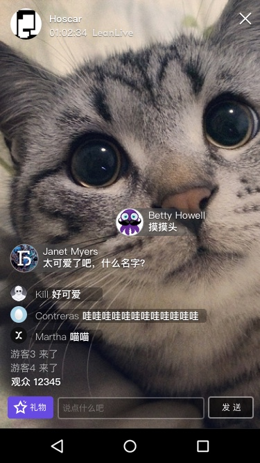
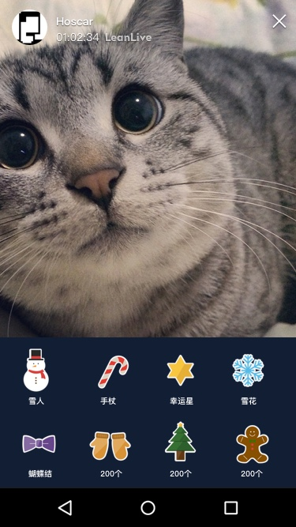

如果需要了解 Android 版本请点击: LiveKit 使用指南 · Android
LiveKit 是由 LeanCloud 官方推出的一个专门开发视频直播的 UI 组件，包含了直播、文字聊天、弹幕、送礼物等界面。其主要特点有：
针对直播服务，LeanCloud 只按照 聊天的费用标准 收费，而直播相关的内容，LeanCloud 并不参与收费，其产生的费用请在七牛账户中查询。
发送弹幕和普通消息
发送礼物消息
git clone --depth=1 https://github.com/leancloud/LeanCloudLiveKit-iOS.git
└── LiveKit-iOS ├── LiveKit-iOS │ ├── Assets.xcassets │ ├── Class │ │ ├── Camera │ │ │ ├── Controller │ │ │ └── View │ │ ├── Category │ │ ├── Live │ │ │ ├── ChildViewController │ │ │ ├── Controller │ │ │ ├── Model │ │ │ └── View │ │ ├── Main │ │ │ ├── Controller │ │ │ └── Libs │ │ │ ├── IJKMediaFramework.framework #缺少的库 │ │ │ └── ... ... │ │ └── Mine │ │ ├── Category │ │ ├── Controller │ │ └── View │ ├── LiveChat #推流端和播放端 │ ├── Model │ ├── Resources │ │ ├── Gift │ │ └── HeartImage │ ├── Streaming │ │ └── PLCameraStreamingKit │ ├── Tool │ │ └── MBProgressHUD │ └── View └── Pods ├── ChatKit #IM系统 └── Class ├── Model ├── Module ├── Resources ├── Tool │ ├── Categories │ ├── Service │ └── Vendor └── View
本库通过 CocoaPods 管理依赖。如果尚未安装 CocoaPods，请在终端运行如下命令来安装：
sudo gem install cocoapods
如果你的网络不能访问 CocoaPods 服务器，可以通过淘宝的 RubyGems 镜像进行安装。
gem sources --add https://ruby.taobao.org/ --remove https://rubygems.org/ sudo gem install cocoapods
然后通过 CocoaPods 进行安装：
pod install
或者：
# 禁止升级 CocoaPods 的 spec 仓库，否则会卡在 Analyzing dependencies，非常慢 pod update --verbose --no-repo-update
如果提示找不到库，则可去掉 --no-repo-update。
--no-repo-update
完成后，CocoaPods 会在项目根目录下生成一个 .xcworkspace 文件。你需要通过此文件来打开项目，不是之前的 .xcodeproj。
.xcworkspace
.xcodeproj
Pod 安装完成后，还需要下载 IJKMediaFramework.framework 并放置到在 项目结构 中已标注出的目录中。
IJKMediaFramework.framework
在 Demo 中播放端的配置演示主要集中在 PlayerViewController 这个类。播放端的配置步骤如下：
PlayerViewController
应用层面需要提供 URL，然后将 URL 传给 LiveKit，LiveKit 会根据 URL 查询聊天室信息，如果发现不存在，则创建一个聊天室：
[[LCLKLiveService sharedInstance] fetchConversationIfNeededForLiveId:self.liveUrl callback:^(AVIMConversation *conversation, NSError *error) { if (conversation) { //... } }];
根据 URL 获得聊天室 ID 后，再根据 ID 获取聊天室视图，具体可以参考以下方法：
-[PlayerViewController exampleOpenConversationViewControllerWithConversaionId:fromNavigationController:]`
聊天视图位置的设置需要借助 LiveKit 提供的生命周期函数来完成：
-setViewDidLoadBlock:
-setViewWillAppearBlock:
-setViewWillDisappearBlock:
同时将自动加入聊天室属性 enableAutoJoin 设置为 YES。
enableAutoJoin
在 Demo 中推流端的配置演示主要集中在 PLViewController 这个类。
PLViewController
Demo 使用了七牛 SDK 的推流端 PLStreamingKit，这是一个适用于 iOS 的 RTMP 直播推流 SDK，可高度定制化和二次开发。特色是支持 H.264 硬编码和 AAC 硬编码，同时还根据移动网络环境的多变性，实现了一套可供开发者灵活选择的编码参数集合。PLStreamingKit 不包括摄像头、麦克风等设备相关的资源获取，只包括音视频数据的编码处理和发送。
PLStreamingKit
具体步骤为：在 AppDelegate.m 中进行 SDK 初始化。如果未进行 SDK 初始化，在核心类 PLStreamingSession 初始化阶段将抛出异常。
AppDelegate.m
PLStreamingSession
#import <PLStreamingKit/PLStreamingEnv.h> - (BOOL)application:(UIApplication *)application didFinishLaunchingWithOptions:(NSDictionary *)launchOptions { [PLStreamingEnv initEnv]; // Override point for customization after application launch. return YES; }
在需要的地方添加：
#import <PLStreamingKit/PLStreamingKit.h>
PLStreamingSession 是核心类，你只需要关注并使用这个类就可以完成推流工作。PLStreamingSession 的创建如下：
// streamJSON 是从服务端拿回的 // // 从服务端拿回的 streamJSON 结构如下： // @{@"id": @"stream_id", // @"title": @"stream_title", // @"hub": @"hub_name", // @"publishKey": @"publish_key", // @"publishSecurity": @"dynamic", // or static // @"disabled": @(NO), // @"profiles": @[@"480p", @"720p"], // or empty Array [] // @"hosts": @{ // ... // } NSDictionary *streamJSON; PLVideoStreamingConfiguration *videoStreamingConfiguration = [PLVideoStreamingConfiguration configurationWithVideoSize:CGSizeMake(320, 576) videoQuality:kPLVideoStreamingQualityLow2]; PLAudioStreamingConfiguration *audioStreamingConfiguration = [PLAudioStreamingConfiguration defaultConfiguration]; PLStream *stream = [PLStream streamWithJSON:streamJSON]; self.session = [[PLStreamingSession alloc] initWithVideoStreamingConfiguration:videoStreamingConfiguration audioStreamingConfiguration:audioStreamingConfiguration stream:stream]; self.session.delegate = self;
推流操作：
// 开始推流，无论 security policy 是 static 还是 dynamic，都无需再单独计算推流地址 [self.session startWithCompleted:^(BOOL success) { // 这里的代码在主线程运行，所以可以放心对 UI 控件做操作 if (success) { // 连接成功后的处理 // 成功后，在这里才可以读取 self.session.pushURL，start 失败和之前不能确保读取到正确的 URL } else { // 连接失败后的处理 } }]; // 停止推流 [self.session stop];
销毁推流 session：
[self.session destroy];
推流端需要获取的 streamJSON，具体内容可以参考：
streamJSON
播放端采用通用的直播组件，Demo 中实时播放的直播地址是从网上抓包获取到的。如果想观看推流端的直播视频，直接替换 URL 地址就可以达到效果。播放端和推流端的代码位置已在 项目结构 中标注。
IM 实时通信的配置需要参考 ChatKit-OC 。IM 代码位置已标注在 项目结构 中。
可供参考的开源项目：
LiveKit 使用指南 · Objective-C
LiveKit 是由 LeanCloud 官方推出的一个专门开发视频直播的 UI 组件，包含了直播、文字聊天、弹幕、送礼物等界面。其主要特点有：
针对直播服务，LeanCloud 只按照 聊天的费用标准 收费，而直播相关的内容，LeanCloud 并不参与收费，其产生的费用请在七牛账户中查询。
发送弹幕和普通消息
发送礼物消息
获取项目
项目结构
CocoaPods 导入
本库通过 CocoaPods 管理依赖。如果尚未安装 CocoaPods，请在终端运行如下命令来安装：
如果你的网络不能访问 CocoaPods 服务器，可以通过淘宝的 RubyGems 镜像进行安装。
然后通过 CocoaPods 进行安装：
或者：
如果提示找不到库，则可去掉
--no-repo-update。完成后，CocoaPods 会在项目根目录下生成一个
.xcworkspace文件。你需要通过此文件来打开项目，不是之前的.xcodeproj。Pod 安装完成后，还需要下载
IJKMediaFramework.framework并放置到在 项目结构 中已标注出的目录中。播放端配置
在 Demo 中播放端的配置演示主要集中在
PlayerViewController这个类。播放端的配置步骤如下：应用层面需要提供 URL，然后将 URL 传给 LiveKit，LiveKit 会根据 URL 查询聊天室信息，如果发现不存在，则创建一个聊天室：
根据 URL 获得聊天室 ID 后，再根据 ID 获取聊天室视图，具体可以参考以下方法：
聊天视图位置的设置需要借助 LiveKit 提供的生命周期函数来完成：
-setViewDidLoadBlock:-setViewWillAppearBlock:-setViewWillDisappearBlock:同时将自动加入聊天室属性
enableAutoJoin设置为 YES。推流端配置
在 Demo 中推流端的配置演示主要集中在
PLViewController这个类。Demo 使用了七牛 SDK 的推流端
PLStreamingKit，这是一个适用于 iOS 的 RTMP 直播推流 SDK，可高度定制化和二次开发。特色是支持 H.264 硬编码和 AAC 硬编码，同时还根据移动网络环境的多变性，实现了一套可供开发者灵活选择的编码参数集合。PLStreamingKit不包括摄像头、麦克风等设备相关的资源获取，只包括音视频数据的编码处理和发送。具体步骤为：在
AppDelegate.m中进行 SDK 初始化。如果未进行 SDK 初始化，在核心类PLStreamingSession初始化阶段将抛出异常。在需要的地方添加：
PLStreamingSession是核心类，你只需要关注并使用这个类就可以完成推流工作。PLStreamingSession的创建如下：推流操作：
销毁推流 session：
推流端需要获取的
streamJSON，具体内容可以参考：播放端采用通用的直播组件，Demo 中实时播放的直播地址是从网上抓包获取到的。如果想观看推流端的直播视频，直接替换 URL 地址就可以达到效果。播放端和推流端的代码位置已在 项目结构 中标注。
IM 系统配置
IM 实时通信的配置需要参考 ChatKit-OC 。IM 代码位置已标注在 项目结构 中。
可供参考的开源项目：